3+5[1] 8CMOR Lunch’n’Learn
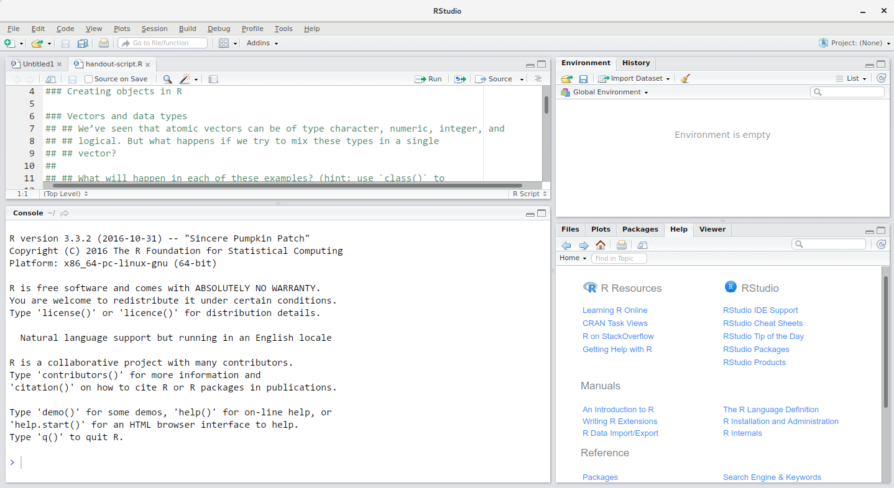
Source
Console
Environment/
History
Files/Plots/
Packages/
Help/Viewer
. . .
3+5[1] 8. . .
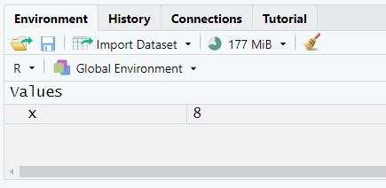
. . .
y <- 2 * x
y[1] 16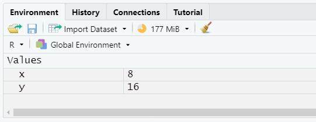
. . .
x <- 25
y[1] 16sqrt(x)[1] 5. . .
?sqrt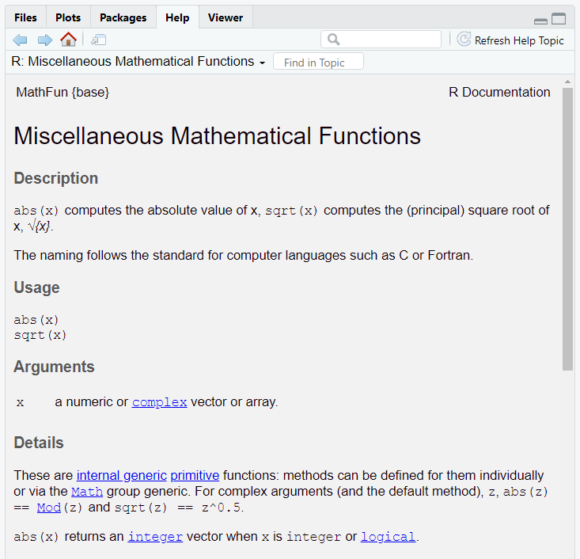
times2 <- function(a) {
return(a * 2)
}
times2(x)[1] 50. . .
z <- c(3, 7, 10, 6)
z[1] 3 7 10 6. . .
c("apple", "banana")[1] "apple" "banana"The quotes are essential:
otherwise R will look for the names ‘apple’ and ‘banana’ (if these names exist, it will use the values they refer to instead of the character strings; if they don’t, it will give an error)
numeric, character, logical (TRUE and FALSE values only), and integer
complex and raw, but we don’t need to worry about thosea <- c(4, 2, 5, 12)
a[c(4, 2)][1] 12 2a[c(TRUE, FALSE, TRUE, FALSE)][1] 4 5a[a > 4][1] 5 12tidyversetidyverse’ is a collection of packages created by the company that makes RStudiotibble: a replacement for base data framesreadr: read tabular data like csv files (also readxl for Excel files, haven for SPSS/Stata/SAS, and others for different file types)dplyr: data manipulationtidyr: reshaping and tidying dataggplot2: creating plotspurrr: functional programmingstringr: working with character stringsforcats: working with factor variablesread_csv():library(tidyverse)
gapminder <- read_csv("raw_data/gapminder_data.csv")
gapminder# A tibble: 1,704 × 6
country year pop continent lifeExp gdpPercap
<chr> <dbl> <dbl> <chr> <dbl> <dbl>
1 Afghanistan 1952 8425333 Asia 28.8 779.
2 Afghanistan 1957 9240934 Asia 30.3 821.
3 Afghanistan 1962 10267083 Asia 32.0 853.
4 Afghanistan 1967 11537966 Asia 34.0 836.
5 Afghanistan 1972 13079460 Asia 36.1 740.
6 Afghanistan 1977 14880372 Asia 38.4 786.
7 Afghanistan 1982 12881816 Asia 39.9 978.
8 Afghanistan 1987 13867957 Asia 40.8 852.
9 Afghanistan 1992 16317921 Asia 41.7 649.
10 Afghanistan 1997 22227415 Asia 41.8 635.
# ℹ 1,694 more rowsdplyrselect() only a subset of variablesselect(gapminder, year, country, gdpPercap)# A tibble: 1,704 × 3
year country gdpPercap
<dbl> <chr> <dbl>
1 1952 Afghanistan 779.
2 1957 Afghanistan 821.
3 1962 Afghanistan 853.
4 1967 Afghanistan 836.
5 1972 Afghanistan 740.
6 1977 Afghanistan 786.
7 1982 Afghanistan 978.
8 1987 Afghanistan 852.
9 1992 Afghanistan 649.
10 1997 Afghanistan 635.
# ℹ 1,694 more rowsdplyrfilter() only a subset of observationsfilter(gapminder, continent == "Europe", year == 2007)# A tibble: 30 × 6
country year pop continent lifeExp gdpPercap
<chr> <dbl> <dbl> <chr> <dbl> <dbl>
1 Albania 2007 3600523 Europe 76.4 5937.
2 Austria 2007 8199783 Europe 79.8 36126.
3 Belgium 2007 10392226 Europe 79.4 33693.
4 Bosnia and Herzegovina 2007 4552198 Europe 74.9 7446.
5 Bulgaria 2007 7322858 Europe 73.0 10681.
6 Croatia 2007 4493312 Europe 75.7 14619.
7 Czech Republic 2007 10228744 Europe 76.5 22833.
8 Denmark 2007 5468120 Europe 78.3 35278.
9 Finland 2007 5238460 Europe 79.3 33207.
10 France 2007 61083916 Europe 80.7 30470.
# ℹ 20 more rowsdplyrmutate() to create new variablesmutate(gapminder, gdp_billion = gdpPercap * pop / 10^9)# A tibble: 1,704 × 7
country year pop continent lifeExp gdpPercap gdp_billion
<chr> <dbl> <dbl> <chr> <dbl> <dbl> <dbl>
1 Afghanistan 1952 8425333 Asia 28.8 779. 6.57
2 Afghanistan 1957 9240934 Asia 30.3 821. 7.59
3 Afghanistan 1962 10267083 Asia 32.0 853. 8.76
4 Afghanistan 1967 11537966 Asia 34.0 836. 9.65
5 Afghanistan 1972 13079460 Asia 36.1 740. 9.68
6 Afghanistan 1977 14880372 Asia 38.4 786. 11.7
7 Afghanistan 1982 12881816 Asia 39.9 978. 12.6
8 Afghanistan 1987 13867957 Asia 40.8 852. 11.8
9 Afghanistan 1992 16317921 Asia 41.7 649. 10.6
10 Afghanistan 1997 22227415 Asia 41.8 635. 14.1
# ℹ 1,694 more rowsdplyrsummarise() to calculate summary statisticssummarise(gapminder, mean_gdpPercap = mean(gdpPercap))# A tibble: 1 × 1
mean_gdpPercap
<dbl>
1 7215.. . .
group_by()summarise(group_by(gapminder, continent),
mean_gdpPercap = mean(gdpPercap))# A tibble: 5 × 2
continent mean_gdpPercap
<chr> <dbl>
1 Africa 2194.
2 Americas 7136.
3 Asia 7902.
4 Europe 14469.
5 Oceania 18622.dplyrThe power of dplyr is in combining several commands using ‘pipes’
The previous command could be written:
gapminder %>%
group_by(continent) %>%
summarise(mean_gdpPercap = mean(gdpPercap))# A tibble: 5 × 2
continent mean_gdpPercap
<chr> <dbl>
1 Africa 2194.
2 Americas 7136.
3 Asia 7902.
4 Europe 14469.
5 Oceania 18622.tidyr package helps us transform our data from one shape to the other
pivot_wider() takes a long dataset and makes it widerpivot_longer() takes a wide dataset and makes it longergapminder# A tibble: 1,704 × 6
country year pop continent lifeExp gdpPercap
<chr> <dbl> <dbl> <chr> <dbl> <dbl>
1 Afghanistan 1952 8425333 Asia 28.8 779.
2 Afghanistan 1957 9240934 Asia 30.3 821.
3 Afghanistan 1962 10267083 Asia 32.0 853.
4 Afghanistan 1967 11537966 Asia 34.0 836.
5 Afghanistan 1972 13079460 Asia 36.1 740.
6 Afghanistan 1977 14880372 Asia 38.4 786.
7 Afghanistan 1982 12881816 Asia 39.9 978.
8 Afghanistan 1987 13867957 Asia 40.8 852.
9 Afghanistan 1992 16317921 Asia 41.7 649.
10 Afghanistan 1997 22227415 Asia 41.8 635.
# ℹ 1,694 more rowsgapminder_wide <- gapminder %>%
pivot_wider(id_cols = c(country, continent),
names_from = year, values_from = c(pop, lifeExp, gdpPercap))
gapminder_wide# A tibble: 142 × 38
country continent pop_1952 pop_1957 pop_1962 pop_1967 pop_1972 pop_1977
<chr> <chr> <dbl> <dbl> <dbl> <dbl> <dbl> <dbl>
1 Afghanistan Asia 8425333 9240934 10267083 11537966 13079460 14880372
2 Albania Europe 1282697 1476505 1728137 1984060 2263554 2509048
3 Algeria Africa 9279525 10270856 11000948 12760499 14760787 17152804
4 Angola Africa 4232095 4561361 4826015 5247469 5894858 6162675
5 Argentina Americas 17876956 19610538 21283783 22934225 24779799 26983828
6 Australia Oceania 8691212 9712569 10794968 11872264 13177000 14074100
7 Austria Europe 6927772 6965860 7129864 7376998 7544201 7568430
8 Bahrain Asia 120447 138655 171863 202182 230800 297410
9 Bangladesh Asia 46886859 51365468 56839289 62821884 70759295 80428306
10 Belgium Europe 8730405 8989111 9218400 9556500 9709100 9821800
# ℹ 132 more rows
# ℹ 30 more variables: pop_1982 <dbl>, pop_1987 <dbl>, pop_1992 <dbl>,
# pop_1997 <dbl>, pop_2002 <dbl>, pop_2007 <dbl>, lifeExp_1952 <dbl>,
# lifeExp_1957 <dbl>, lifeExp_1962 <dbl>, lifeExp_1967 <dbl>,
# lifeExp_1972 <dbl>, lifeExp_1977 <dbl>, lifeExp_1982 <dbl>,
# lifeExp_1987 <dbl>, lifeExp_1992 <dbl>, lifeExp_1997 <dbl>,
# lifeExp_2002 <dbl>, lifeExp_2007 <dbl>, gdpPercap_1952 <dbl>, …gapminder_wide %>%
pivot_longer(pop_1952:gdpPercap_2007,
names_to = c(".value", "year"), names_sep = "_")# A tibble: 1,704 × 6
country continent year pop lifeExp gdpPercap
<chr> <chr> <chr> <dbl> <dbl> <dbl>
1 Afghanistan Asia 1952 8425333 28.8 779.
2 Afghanistan Asia 1957 9240934 30.3 821.
3 Afghanistan Asia 1962 10267083 32.0 853.
4 Afghanistan Asia 1967 11537966 34.0 836.
5 Afghanistan Asia 1972 13079460 36.1 740.
6 Afghanistan Asia 1977 14880372 38.4 786.
7 Afghanistan Asia 1982 12881816 39.9 978.
8 Afghanistan Asia 1987 13867957 40.8 852.
9 Afghanistan Asia 1992 16317921 41.7 649.
10 Afghanistan Asia 1997 22227415 41.8 635.
# ℹ 1,694 more rowstidyverse packagesggplot2 in a later sessionpurrr provides tools for functional programming
purrr, we can use map() (and similar) to apply a function to multiple inputs and extract all of the outputsstringr and forcats are worth looking at if you need to work with string or factor variables – we won’t cover them here. . .
. . .
R has evolved over time to fit a variety of different needs and use cases
This gives it great flexibility and ability to meet the needs of different users
But, the diversity of interfaces, data structures, implementation, and fitted model objects can be a challenge
We’ll cover some tools to help bridge that gap
A few common (but not universal) features:
Models are described by a formula: e.g. y ~ x + z
Data are provided in a data frame (or, equivalently, tibble)
coef(), vcov(), summary() can be used to extract the coefficient estimates, variance covariance matrix, and to print a summary of the fitted model
broom packagebroom provides several functions to convert fitted model objects to tidy tibbles
Functions:
tidy(): construct a tibble that summarises the statistical findings (coefficients, p-values, etc.)augment(): add new columns to the original data (predictions/fitted values, etc.)glance(): construct a one-row summary of the model (goodness-of-fit, etc.)The package works with several model fitting functions from base R and commonly-used packages
Linear regression models can be fitted with the lm() function (in the stats package, part of base R)
We’ll start by loading the gapminder dataset from the previous session:
library(tidyverse)
gapminder <- read_csv("raw_data/gapminder_data.csv")?lm to find the documentationlinear_regression_model <- lm(lifeExp ~ gdpPercap + continent, gapminder)
linear_regression_model
Call:
lm(formula = lifeExp ~ gdpPercap + continent, data = gapminder)
Coefficients:
(Intercept) gdpPercap continentAmericas
4.789e+01 4.453e-04 1.359e+01
continentAsia continentEurope continentOceania
8.658e+00 1.757e+01 1.815e+01 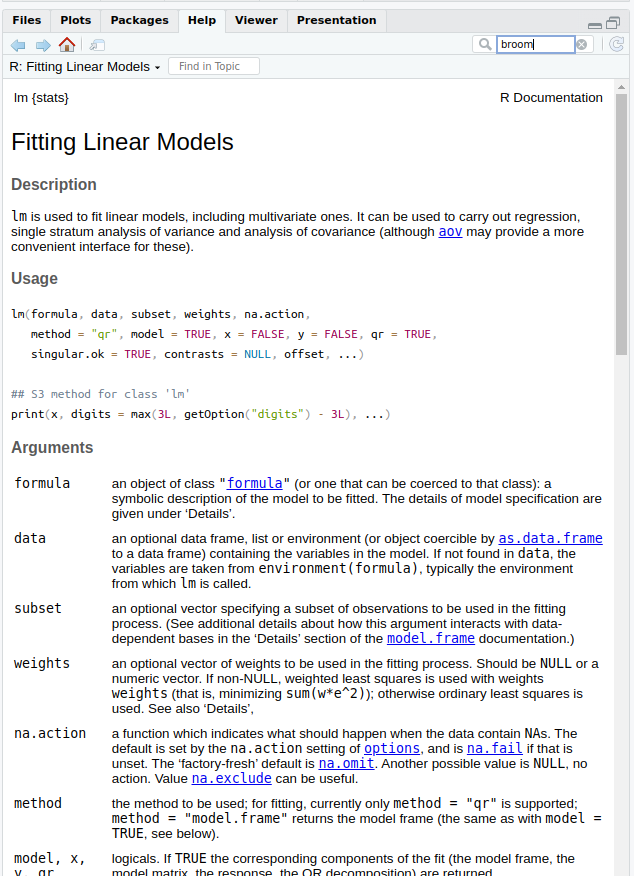
linear_regression_model is now a fitted model object
If we want, we can look at how this object is actually stored:
str(linear_regression_model)List of 13
$ coefficients : Named num [1:6] 4.79e+01 4.45e-04 1.36e+01 8.66 1.76e+01 ...
..- attr(*, "names")= chr [1:6] "(Intercept)" "gdpPercap" "continentAmericas" "continentAsia" ...
$ residuals : Named num [1:1704] -28.1 -26.6 -24.9 -22.9 -20.8 ...
..- attr(*, "names")= chr [1:1704] "1" "2" "3" "4" ...
$ effects : Named num [1:1704] -2455.1 311.1 100.1 -27.9 -223.1 ...
..- attr(*, "names")= chr [1:1704] "(Intercept)" "gdpPercap" "continentAmericas" "continentAsia" ...
$ rank : int 6
$ fitted.values: Named num [1:1704] 56.9 56.9 56.9 56.9 56.9 ...
..- attr(*, "names")= chr [1:1704] "1" "2" "3" "4" ...
$ assign : int [1:6] 0 1 2 2 2 2
$ qr :List of 5
..$ qr : num [1:1704, 1:6] -41.2795 0.0242 0.0242 0.0242 0.0242 ...
.. ..- attr(*, "dimnames")=List of 2
.. .. ..$ : chr [1:1704] "1" "2" "3" "4" ...
.. .. ..$ : chr [1:6] "(Intercept)" "gdpPercap" "continentAmericas" "continentAsia" ...
.. ..- attr(*, "assign")= int [1:6] 0 1 2 2 2 2
.. ..- attr(*, "contrasts")=List of 1
.. .. ..$ continent: chr "contr.treatment"
..$ qraux: num [1:6] 1.02 1.02 1.01 1.04 1.01 ...
..$ pivot: int [1:6] 1 2 3 4 5 6
..$ tol : num 1e-07
..$ rank : int 6
..- attr(*, "class")= chr "qr"
$ df.residual : int 1698
$ contrasts :List of 1
..$ continent: chr "contr.treatment"
$ xlevels :List of 1
..$ continent: chr [1:5] "Africa" "Americas" "Asia" "Europe" ...
$ call : language lm(formula = lifeExp ~ gdpPercap + continent, data = gapminder)
$ terms :Classes 'terms', 'formula' language lifeExp ~ gdpPercap + continent
.. ..- attr(*, "variables")= language list(lifeExp, gdpPercap, continent)
.. ..- attr(*, "factors")= int [1:3, 1:2] 0 1 0 0 0 1
.. .. ..- attr(*, "dimnames")=List of 2
.. .. .. ..$ : chr [1:3] "lifeExp" "gdpPercap" "continent"
.. .. .. ..$ : chr [1:2] "gdpPercap" "continent"
.. ..- attr(*, "term.labels")= chr [1:2] "gdpPercap" "continent"
.. ..- attr(*, "order")= int [1:2] 1 1
.. ..- attr(*, "intercept")= int 1
.. ..- attr(*, "response")= int 1
.. ..- attr(*, ".Environment")=<environment: R_GlobalEnv>
.. ..- attr(*, "predvars")= language list(lifeExp, gdpPercap, continent)
.. ..- attr(*, "dataClasses")= Named chr [1:3] "numeric" "numeric" "character"
.. .. ..- attr(*, "names")= chr [1:3] "lifeExp" "gdpPercap" "continent"
$ model :'data.frame': 1704 obs. of 3 variables:
..$ lifeExp : num [1:1704] 28.8 30.3 32 34 36.1 ...
..$ gdpPercap: num [1:1704] 779 821 853 836 740 ...
..$ continent: chr [1:1704] "Asia" "Asia" "Asia" "Asia" ...
..- attr(*, "terms")=Classes 'terms', 'formula' language lifeExp ~ gdpPercap + continent
.. .. ..- attr(*, "variables")= language list(lifeExp, gdpPercap, continent)
.. .. ..- attr(*, "factors")= int [1:3, 1:2] 0 1 0 0 0 1
.. .. .. ..- attr(*, "dimnames")=List of 2
.. .. .. .. ..$ : chr [1:3] "lifeExp" "gdpPercap" "continent"
.. .. .. .. ..$ : chr [1:2] "gdpPercap" "continent"
.. .. ..- attr(*, "term.labels")= chr [1:2] "gdpPercap" "continent"
.. .. ..- attr(*, "order")= int [1:2] 1 1
.. .. ..- attr(*, "intercept")= int 1
.. .. ..- attr(*, "response")= int 1
.. .. ..- attr(*, ".Environment")=<environment: R_GlobalEnv>
.. .. ..- attr(*, "predvars")= language list(lifeExp, gdpPercap, continent)
.. .. ..- attr(*, "dataClasses")= Named chr [1:3] "numeric" "numeric" "character"
.. .. .. ..- attr(*, "names")= chr [1:3] "lifeExp" "gdpPercap" "continent"
- attr(*, "class")= chr "lm"summary(linear_regression_model)
Call:
lm(formula = lifeExp ~ gdpPercap + continent, data = gapminder)
Residuals:
Min 1Q Median 3Q Max
-49.241 -4.479 0.347 5.105 25.138
Coefficients:
Estimate Std. Error t value Pr(>|t|)
(Intercept) 4.789e+01 3.398e-01 140.93 <2e-16 ***
gdpPercap 4.453e-04 2.350e-05 18.95 <2e-16 ***
continentAmericas 1.359e+01 6.008e-01 22.62 <2e-16 ***
continentAsia 8.658e+00 5.555e-01 15.59 <2e-16 ***
continentEurope 1.757e+01 6.257e-01 28.08 <2e-16 ***
continentOceania 1.815e+01 1.787e+00 10.15 <2e-16 ***
---
Signif. codes: 0 '***' 0.001 '**' 0.01 '*' 0.05 '.' 0.1 ' ' 1
Residual standard error: 8.39 on 1698 degrees of freedom
Multiple R-squared: 0.5793, Adjusted R-squared: 0.5781
F-statistic: 467.7 on 5 and 1698 DF, p-value: < 2.2e-16tidy() from the broom package will put them into a nice tidy tibblelibrary(broom)
tidy(linear_regression_model)# A tibble: 6 × 5
term estimate std.error statistic p.value
<chr> <dbl> <dbl> <dbl> <dbl>
1 (Intercept) 47.9 0.340 141. 0
2 gdpPercap 0.000445 0.0000235 18.9 8.55e- 73
3 continentAmericas 13.6 0.601 22.6 2.82e- 99
4 continentAsia 8.66 0.555 15.6 2.72e- 51
5 continentEurope 17.6 0.626 28.1 7.60e-143
6 continentOceania 18.1 1.79 10.2 1.50e- 23. . .
glance() gives us several overall model statisticsglance(linear_regression_model)# A tibble: 1 × 12
r.squared adj.r.squared sigma statistic p.value df logLik AIC BIC deviance
<dbl> <dbl> <dbl> <dbl> <dbl> <dbl> <dbl> <dbl> <dbl> <dbl>
1 0.579 0.578 8.39 468. 4.26e-316 5 -6039. 12093. 12131. 119528.
# ℹ 2 more variables: df.residual <int>, nobs <int>lmtest and car packages provide tools for inference & hypothesis testingsandwich
tidy() from broom). . .
library(lmtest)
library(sandwich)
linear_regression_model %>%
coeftest(vcov. = vcovCL, cluster = ~country) %>%
tidy()# A tibble: 6 × 5
term estimate std.error statistic p.value
<chr> <dbl> <dbl> <dbl> <dbl>
1 (Intercept) 47.9 0.904 53.0 0
2 gdpPercap 0.000445 0.000159 2.81 5.05e- 3
3 continentAmericas 13.6 1.56 8.69 8.32e-18
4 continentAsia 8.66 1.55 5.57 2.98e- 8
5 continentEurope 17.6 2.18 8.06 1.44e-15
6 continentOceania 18.1 2.77 6.55 7.36e-11glm() functionstats package)?glmgen_linear_regression_model <- glm(lifeExp ~ gdpPercap + continent,
family = "quasipoisson", gapminder)
gen_linear_regression_model
Call: glm(formula = lifeExp ~ gdpPercap + continent, family = "quasipoisson",
data = gapminder)
Coefficients:
(Intercept) gdpPercap continentAmericas
3.875e+00 6.156e-06 2.490e-01
continentAsia continentEurope continentOceania
1.671e-01 3.092e-01 3.177e-01
Degrees of Freedom: 1703 Total (i.e. Null); 1698 Residual
Null Deviance: 4946
Residual Deviance: 2229 AIC: NA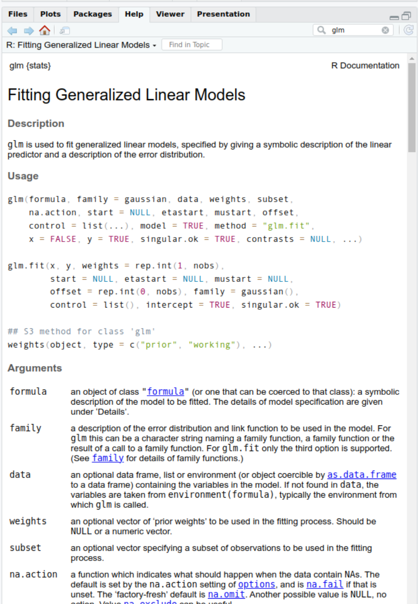
summary(gen_linear_regression_model)
Call:
glm(formula = lifeExp ~ gdpPercap + continent, family = "quasipoisson",
data = gapminder)
Coefficients:
Estimate Std. Error t value Pr(>|t|)
(Intercept) 3.875e+00 6.524e-03 594.03 <2e-16 ***
gdpPercap 6.156e-06 3.475e-07 17.72 <2e-16 ***
continentAmericas 2.490e-01 1.054e-02 23.62 <2e-16 ***
continentAsia 1.671e-01 1.009e-02 16.55 <2e-16 ***
continentEurope 3.092e-01 1.054e-02 29.33 <2e-16 ***
continentOceania 3.177e-01 2.815e-02 11.29 <2e-16 ***
---
Signif. codes: 0 '***' 0.001 '**' 0.01 '*' 0.05 '.' 0.1 ' ' 1
(Dispersion parameter for quasipoisson family taken to be 1.279258)
Null deviance: 4945.6 on 1703 degrees of freedom
Residual deviance: 2229.4 on 1698 degrees of freedom
AIC: NA
Number of Fisher Scoring iterations: 4tidy() and glance() from the broom package to produce nice tidy tibbles. . .
tidy(gen_linear_regression_model, conf.int = TRUE, exponentiate = TRUE)# A tibble: 6 × 7
term estimate std.error statistic p.value conf.low conf.high
<chr> <dbl> <dbl> <dbl> <dbl> <dbl> <dbl>
1 (Intercept) 48.2 0.00652 594. 0 47.6 48.8
2 gdpPercap 1.00 0.000000347 17.7 1.42e- 64 1.00 1.00
3 continentAmericas 1.28 0.0105 23.6 6.86e-107 1.26 1.31
4 continentAsia 1.18 0.0101 16.6 3.57e- 57 1.16 1.21
5 continentEurope 1.36 0.0105 29.3 2.32e-153 1.33 1.39
6 continentOceania 1.37 0.0282 11.3 1.57e- 28 1.30 1.45. . .
glance(gen_linear_regression_model)# A tibble: 1 × 8
null.deviance df.null logLik AIC BIC deviance df.residual nobs
<dbl> <int> <dbl> <dbl> <dbl> <dbl> <int> <int>
1 4946. 1703 NA NA NA 2229. 1698 1704There are many (many!) other packages that estimate different regression models or provide tools for diagnostic testing, post-hoc analysis, or visualisation of regression models
For example, the Econometrics Task View on cran.r-project.org
. . .
ggplot2ggplot2 is the most well-developed and widely usedgapminder dataset from the previous sessionlibrary(tidyverse)
gapminder <- read_csv("raw_data/gapminder_data.csv")ggplot2ggplot objectggplot(data = gapminder)ggplot(data = gapminder, mapping = aes(x = gdpPercap, y = lifeExp))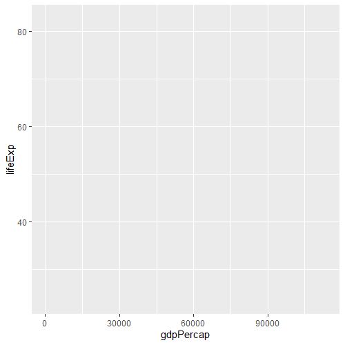
Computers are now essential in all branches of science, but most researchers are never taught the equivalent of basic lab skills for research computing. As a result, data can get lost, analyses can take much longer than necessary, and researchers are limited in how effectively they can work with software and data. Computing workflows need to follow the same practices as lab projects and notebooks, with organized data, documented steps, and the project structured for reproducibility, but researchers new to computing often don’t know where to start.
— Wilson G, Bryan J, Cranston K, et al. Good enough practices in scientific computing. PLoS Comput Biol 2017;13:e1005510
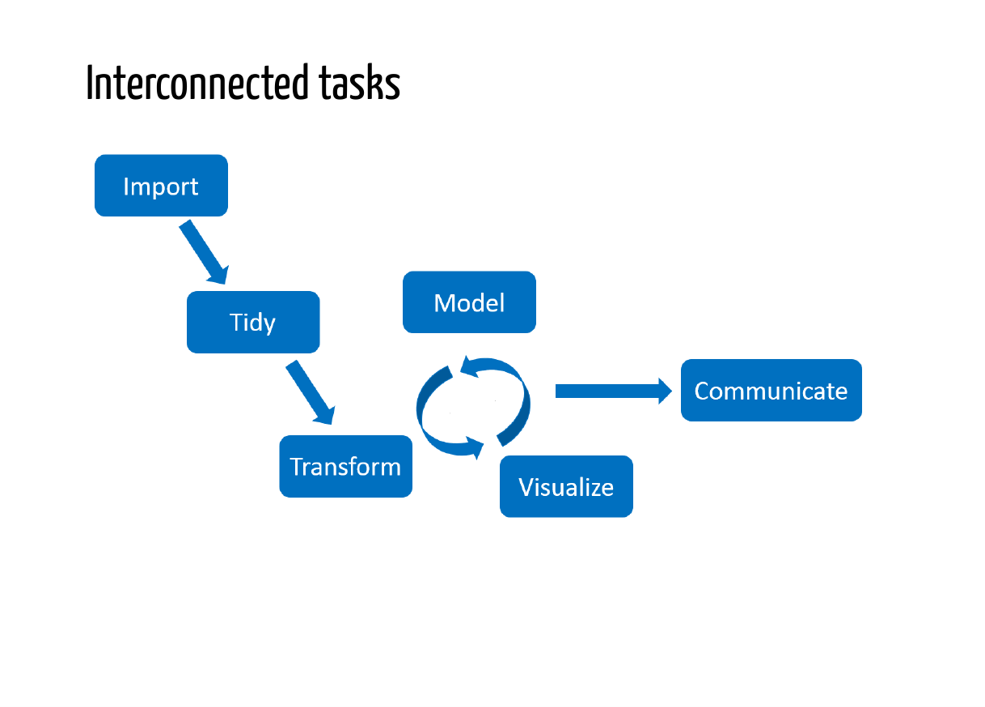
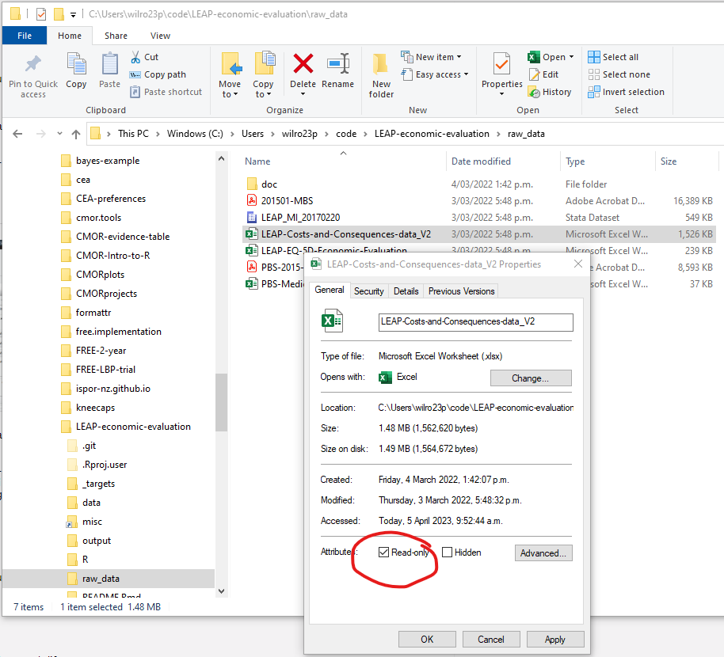
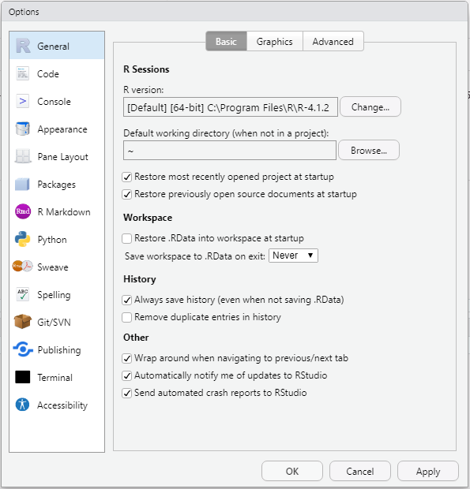
. . .

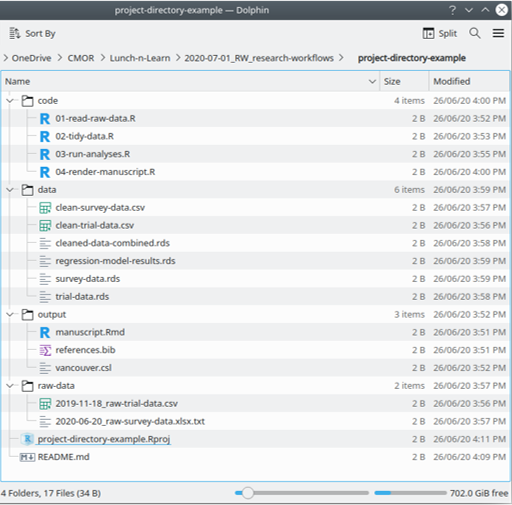
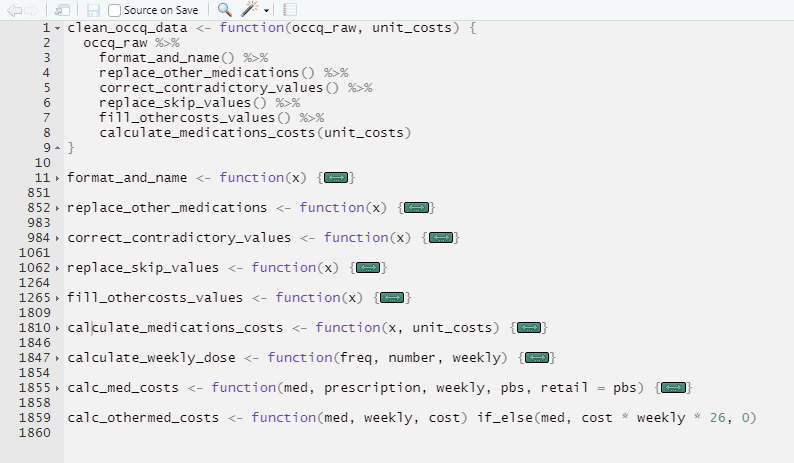
Keeping track of changes to data and code (and being able to revert to a previous version if things go wrong) is critical for reproducible research
This is particularly true when collaborating with others
The best way to do this is with a version control system such as Git
What not to put under version control
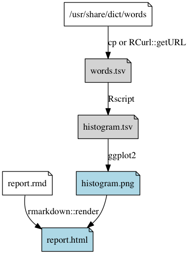
Can be as simple as something like:
source("code/00-download-data.R")
source("code/01-tabulate-frequencies.R")
source("code/02-create-histogram.R")
source("code/03-render-report.R")Shows in what order to run the scripts, and allows us to resume from the middle (if, for example, you have only changed the file 02-create-histogram.R, there is no need to redo the first two steps, but we do need to rerun the create-histogram and render-report steps
For more complicated (or long-running) analyses, we may want to explicitly specify dependencies and let the computer figure out how to get everything up-to-date
Two good tools for doing this:
Advantages of an automated pipeline like this:
Make is a system tool, designed for use in software development, to specify targets, commands, and dependencies between files and selectively re-run commands when dependencies change
A Makefile is a plain text file specifying a list of these targets (intermediate/output files in the analysis workflow), commands (to create the targets), and dependencies (input files needed for each command)
words.txt: /usr/share/dict/words
cp /usr/share/dict/words words.txt
histogram.tsv: histogram.r words.txt
Rscript $<
histogram.png: histogram.tsv
Rscript -e 'library(ggplot2); qplot(Length, Freq, data=read.delim("$<")); ggsave("$@")'
report.html: report.rmd histogram.tsv histogram.png
Rscript -e 'rmarkdown::render("$<")'targets is an R package designed to do something very similar, but specifically designed for R projectsplan <- list(
tar_file(words, download_words()),
tar_target(frequency_table, summarise_word_lengths(words)),
tar_target(histogram, create_histogram(frequency_table)),
tar_file(report, render_report("reports/report.rmd", frequency_table, histogram))
)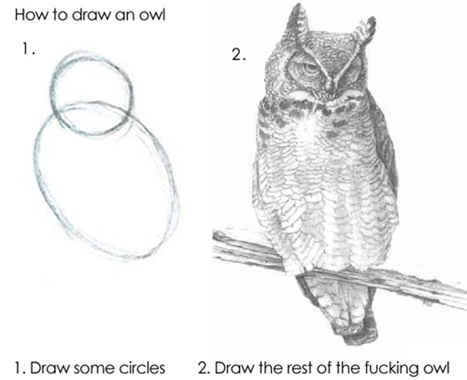
(if you are already writing
script files for your analyses)
(will get better
with practice)
(start with a simple high-level overview of the steps in the analysis,
even if you don’t want to do a full automated pipeline)
drake package, which was a predecessor package of targets. The same concepts all apply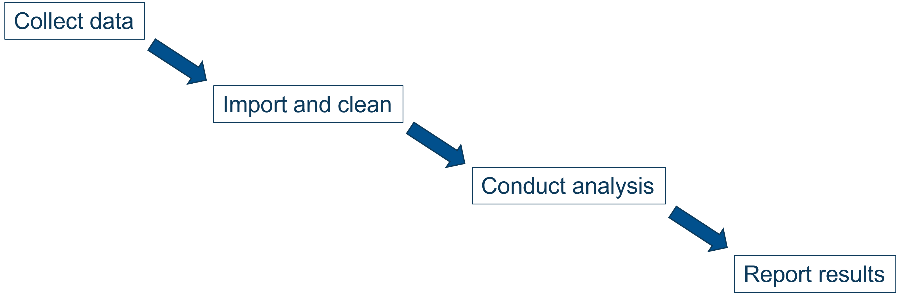
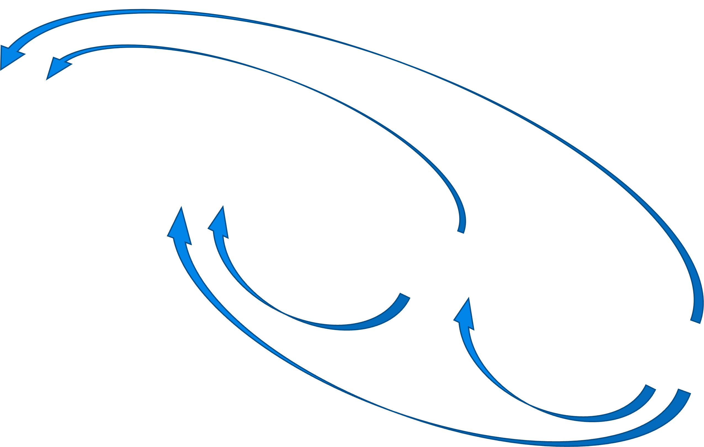
plan <- list(
tar_file(words, download_words()),
tar_target(frequency_table, summarise_word_lengths(words)),
tar_target(histogram, create_histogram(frequency_table)),
tar_file(report, render_report("reports/report.rmd", frequency_table, histogram))
)Advantages:
plan <- list(
tar_file(words, download_words()),
tar_target(frequency_table, summarise_word_lengths(words)),
tar_target(histogram, create_histogram(frequency_table)),
tar_file(report, render_report("reports/report.rmd", frequency_table, histogram))
)Advantages: